Asynchronous Dual-System Architecture
We introduce a novel dual ARCHITECTURE that factorizes cognition from control, combining deep visual-language reasoning with high-frequency action execution.
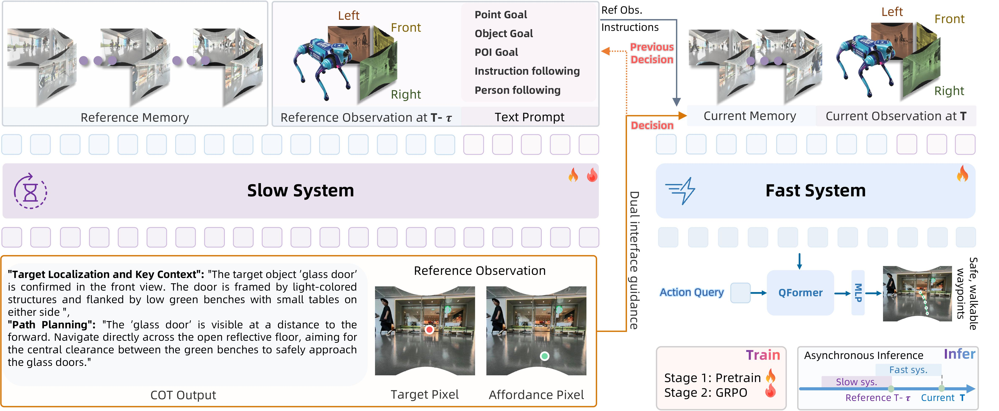
Deliberative Reasoner
The slow system leverages the Qwen-3.5-4B-VL model to perform explicit Chain-of-Thought reasoning over multi-view observations and historical memory. It outputs interpretable natural language traces alongside universal pixel goals to ground abstract intent in image space.
Action Expert
The fast system employs Qwen-3.5-2B as its backbone to jointly encode real-time observations with the slow system's reasoning traces and pixel goals. It distills these multimodal features into a sequence of continuous, adaptive SE(2) waypoints for precise and reactive control.
Asynchronous Inference
The slow and fast systems operate asynchronously, decoupling deep reasoning from high-frequency control. The fast system tracks cached pixel goals to ensure smooth, responsive navigation while the slow system deliberates.
Training Data Recipe
The ABot-N1 pre-training data engine integrates diverse 3D scenes and aggregates expert demonstrations across five core navigation paradigms, providing the essential supervision for both the slow reasoning system and the fast action expert.
Per-Task Data Breakdown
5 Navigation Tasks · 30M Trajectories Data
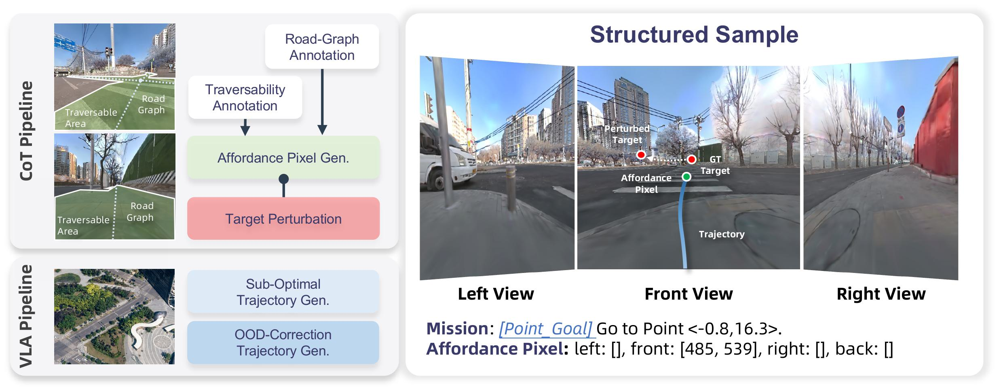
Left: the two-part data construction pipeline, including CoT data generation with affordance pixels and target perturbation, and VLA data synthesis with sub-optimal and OOD-correction trajectories. Right: an example structured sample with tri-view observations and affordance pixel annotations.
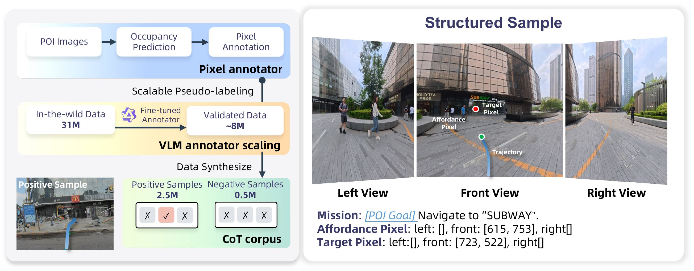
Left: a three-stage construction pipeline that generates geometric seed annotations via monocular depth, scales and filters 31M street-view pairs with a distilled VLM to obtain 8M valid paths, and synthesizes tri-view episodes into positive and negative sample pairs to improve rejection under missing-target conditions. Right: an example structured sample.
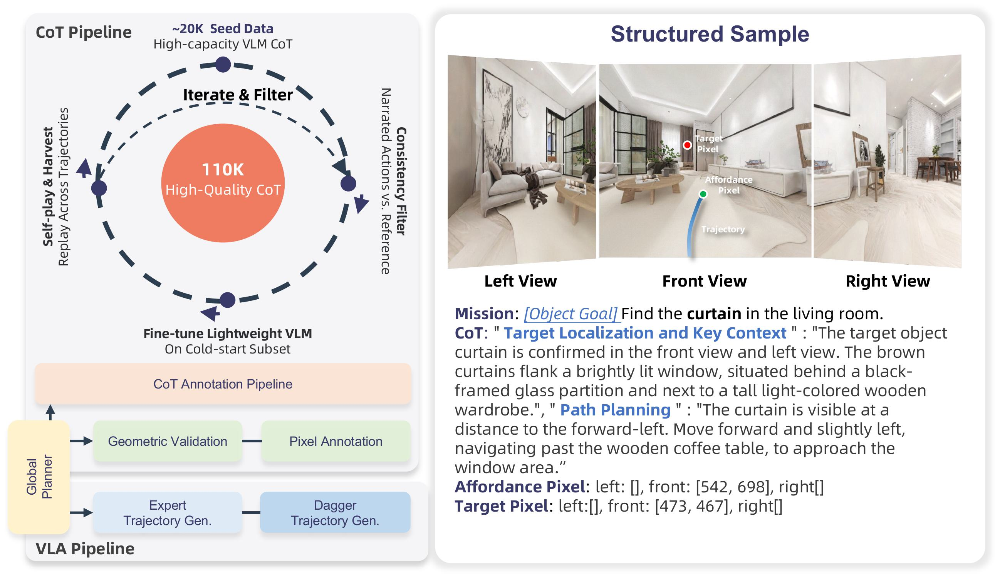
The left panel shows a two-part data pipeline: an iterative flywheel that scales VLM-seeded CoT rationales to 110K high-quality structured samples via A* consistency filtering and self-play harvesting, and a VLA pipeline that generates low-level supervision through pixel annotation and OOD-correction trajectories. The right panel shows the resulting structured tuple, with tri-view observations, object and affordance pixel grounding, and two-block CoT rationales.
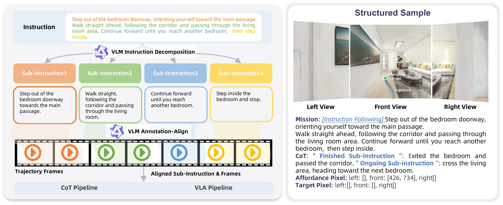
Left: a three-stage pipeline that decomposes long natural-language instructions into sub-instructions, aligns them with milestone frame ranges, and generates/verifies affordance and target pixels for CoT and VLA data. Right: an example structured sample with tri-view observations, language instructions, and pixel-level affordance and target annotations.
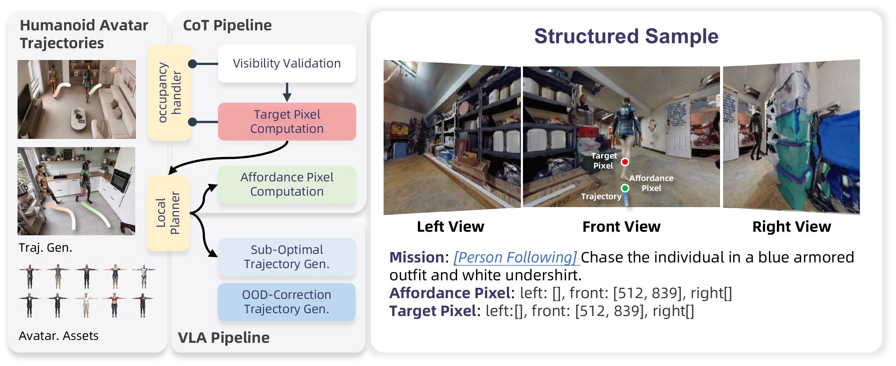
Left: a unified data construction pipeline for both CoT and VLA data, where CoT samples derive affordance and target pixels from human avatar trajectories via A* waypoint planning, visibility detection, and stochastic perturbation, and VLA samples are built from sub-optimal and OOD-correction trajectories. Right: an example structured sample with tri-view observations, affordance and target pixel annotations, and a language instruction describing the target appearance.
Training Protocol
ABot-N1 employs a progressive post-training pipeline that transforms the pre-trained foundation into a socially compliant, generalizable navigator. Training dynamics and generality analysis further validate the effectiveness of each stage.
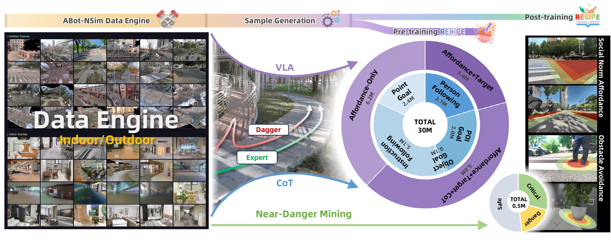
Pre-Training
ABot-N1 initializes both systems from pre-trained Qwen-3.5 checkpoints. The slow system is trained with a cross-entropy loss for CoT tokens and pixel coordinates, while the fast system is supervised with smooth-L1 loss on position and heading angle, together with a binary arriving loss.
Unlike generic VLN settings, where smooth-L1 regression can suffer from mode collapse on multi-modal targets, ABot-N1 avoids this issue through its dual-system design. The slow system first makes the discrete decision with CoT reasoning and pixel-goal output, which concentrates the future-waypoint distribution into a dominant mode. Conditioned on these outputs, the fast policy faces an approximately uni-modal regression problem, making smooth-L1 stable and sample-efficient. Both systems are also trained with noise-injected inputs, such as perturbed target coordinates, noisy prior pixel predictions, and simulated asynchronous lag, to improve robustness against imperfect upstream signals during deployment.
GRPO-Based Alignment
To preserve pretrained capabilities during GRPO training, we avoid biased preference sampling and use action-balanced batch sampling to keep the data unbiased and training stable. This also helps prevent reward-hacking equilibria such as target withholding and permanent inaction by balancing target and safety rewards and adding a strong penalty for missing predictions.
The reward design is task-agnostic by construction: Rformat depends only on the output schema, and Rsafety depends only on scene geometry and traversability rules. Extending ABot-N1 to instruction-following, object-goal, or person-following requires only redefining Rtarget, and we validate the pipeline at scale on 0.5M point-goal episodes.
ABot-N Benchmark
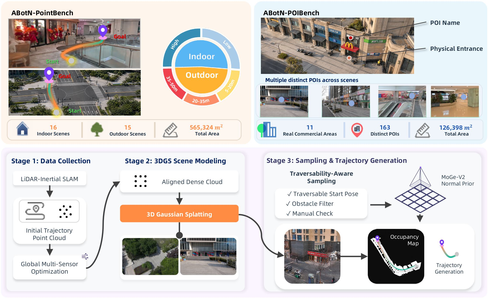
ABotN-PointBench
- ABotN-PointBench addresses key gaps in prior Point-Goal benchmarks, including scene homogeneity, open-loop evaluation, and missing social-rule compliance.
- It spans 31 real-world scenes across indoor and outdoor environments, with fine-grained walkability annotations and 465 reference trajectories.
- We evaluate with SR and SPL, measuring both navigation success and socially compliant closed-loop control.
ABotN-POIBench
- ABotN-POIBench fills the gap between open-loop waypoint prediction and coarse block-level POI evaluation, which miss entrance-level arrival accuracy.
- It covers 11 commercial regions and 163 POIs, with high-fidelity 3DGS reconstructions and physical entrance annotations.
- We evaluate with SR@2m and SPL, measuring final-meters arrival accuracy and efficient POI navigation.
Evaluation Results
ABot-N1 is evaluated across five navigation paradigms and seven benchmarks, achieving new state-of-the-art performance. Results are organized by task — select a tab to explore each benchmark.
| Method | SR (↑) | SPL (↑) | ||||||
|---|---|---|---|---|---|---|---|---|
| All | L | M | H | All | L | M | H | |
| GNM | 39.1 | 66.7 | 32.0 | 18.7 | 36.7 | 65.3 | 28.4 | 16.5 |
| ViNT | 62.2 | 92.0 | 50.7 | 44.0 | 62.2 | 92.0 | 50.6 | 44.0 |
| NoMaD | 56.0 | 90.7 | 45.3 | 32.0 | 55.7 | 90.0 | 45.3 | 31.6 |
| CityWalker | 48.9 | 73.3 | 40.0 | 33.3 | 48.3 | 72.2 | 39.7 | 32.8 |
| SocialNav | 72.0 | 93.3 | 60.0 | 58.7 | 71.9 | 93.2 | 63.9 | 58.7 |
| ABot-N0 | 76.9 | 93.3 | 72.0 | 65.3 | 76.9 | 93.3 | 72.0 | 65.3 |
| ABot-N1 | 92.9 | 96.0 | 94.7 | 88.0 | 91.4 | 95.6 | 92.3 | 86.4 |
| Method | SR (↑) | SPL (↑) | ||||||
|---|---|---|---|---|---|---|---|---|
| All | L | H | All | L | H | |||
| GNM | 26.7 | 30.8 | 22.5 | 26.6 | 30.6 | 22.5 | ||
| ViNT | 27.9 | 32.5 | 23.3 | 27.9 | 32.4 | 23.3 | ||
| NoMaD | 20.0 | 20.8 | 19.2 | 19.6 | 20.5 | 18.6 | ||
| CityWalker | 21.7 | 23.3 | 20.0 | 21.6 | 23.3 | 19.9 | ||
| SocialNav | 42.5 | 46.7 | 38.3 | 42.5 | 46.7 | 38.3 | ||
| ABot-N0 | 89.6 | 91.7 | 87.5 | 85.6 | 87.5 | 83.7 | ||
| ABot-N1 | 95.4 | 95.0 | 95.8 | 93.7 | 93.3 | 94.2 | ||
| Method | SR↑ | SPL↑ | DTG↓ |
|---|---|---|---|
| StreamVLN | 39.7 | 15.8 | 2.368 |
| NaVILA | 55.4 | 26.1 | 1.811 |
| InternVLA-N1 (S2 only) | 58.5 | 30.0 | 1.441 |
| Uni-NaVILA | 68.7 | 34.5 | 1.495 |
| ABot-N0 | 73.2 | 35.4 | 1.442 |
| ABot-N1 | 84.9 | 51.8 | 0.822 |
| Method | NE↓ | OS↑ | SR↑ | SPL↑ |
|---|---|---|---|---|
| Uni-NaVILA | 5.58 | 53.5 | 47.0 | 42.7 |
| NaVILA | 5.22 | 62.5 | 54.0 | 49.0 |
| StreamVLN | 4.98 | 64.2 | 56.9 | 51.9 |
| CorrectNav | 4.24 | 67.5 | 65.1 | 62.3 |
| NavFoM | 4.61 | 72.1 | 61.7 | 55.3 |
| Qwen-VLA | 5.10 | 69.0 | 57.3 | 51.2 |
| ABot-N0 | 3.80 | 70.8 | 66.4 | 63.9 |
| ABot-N1 | 3.32 | 75.2 | 70.9 | 67.5 |
| Method | NE↓ | SR↑ | SPL↑ |
|---|---|---|---|
| Uni-NaVILA | 6.24 | 48.7 | 40.9 |
| NaVILA | 6.77 | 49.3 | 44.0 |
| StreamVLN | 6.22 | 52.9 | 46.0 |
| CorrectNav | 4.09 | 69.3 | 63.3 |
| NavFoM | 4.74 | 64.4 | 56.2 |
| NavForesee | 4.20 | 66.3 | 53.2 |
| Qwen-VLA | 5.80 | 59.6 | 47.8 |
| ABot-N0 | 3.83 | 69.3 | 60.0 |
| ABot-N1 | 3.13 | 73.9 | 63.9 |
| Method | SR↑ | SPL↑ |
|---|---|---|
| ViNT | 19.0 | 18.2 |
| OmniNav (vanilla) | 23.9 | 22.4 |
| OmniNav (BridgeNav training) | 34.4 | 31.5 |
| ABot-N0 | 20.9 | 17.7 |
| POINav | 42.3 | 40.3 |
| ABot-N1 | 77.3 | 72.6 |
| Method | Single-Target (STT) | Distracted (DT) | Ambiguity (AT) | ||||||
|---|---|---|---|---|---|---|---|---|---|
| SR↑ | TR↑ | CR↓ | SR↑ | TR↑ | CR↓ | SR↑ | TR↑ | CR↓ | |
| IBVS | 42.9 | 56.2 | 3.75 | 10.6 | 28.4 | 6.14 | 15.2 | 39.5 | 4.90 |
| Uni-NaVid | 25.7 | 39.5 | 41.9 | 11.3 | 27.4 | 43.5 | 8.26 | 28.6 | 43.7 |
| NavFoM | 85.0 | 80.5 | - | 61.4 | 68.2 | - | - | - | - |
| TrackVLA++ | 86.0 | 81.0 | 2.10 | 66.5 | 68.8 | 4.71 | 51.2 | 63.4 | 15.9 |
| Qwen-RobotNav-4B | 77.4 | 90.0 | 6.40 | - | - | - | - | - | - |
| ABot-N0 | 86.9 | 87.6 | 8.54 | 66.7 | 75.4 | 11.6 | 67.3 | 79.5 | 7.05 |
| ABot-N1 | 90.1 | 89.8 | 4.27 | 67.4 | 84.4 | 17.9 | 70.0 | 87.8 | 17.9 |
Deployment Visualization
Real-world deployment experiments across five core navigation tasks, demonstrating ABot-N1's execution precision and robustness in diverse environments.
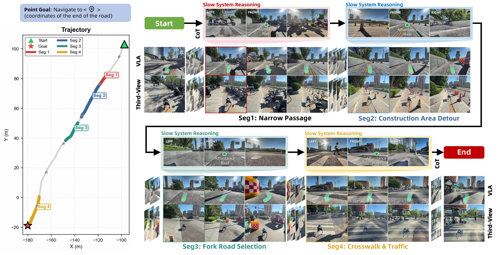
Point-Goal Navigation
Four segments of a long-range outdoor episode showcasing obstacle avoidance on narrow roads, construction area detour, correct fork selection, and traffic-light-compliant crosswalk traversal.
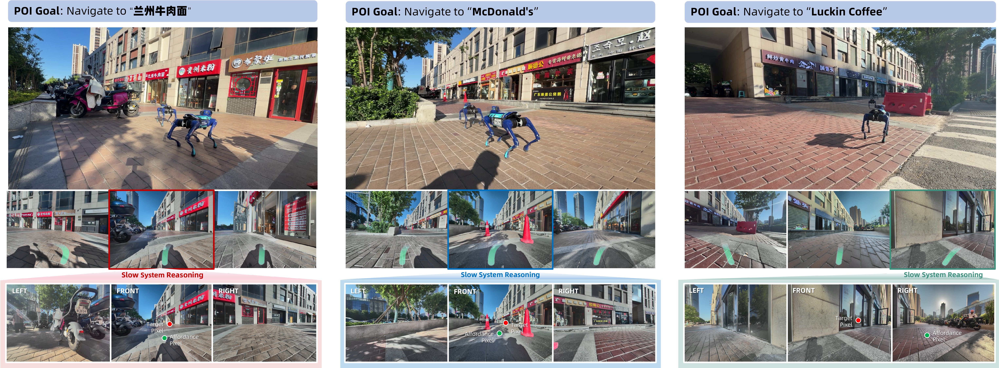
POI-Goal Navigation
Locating a Lanzhou noodle restaurant (large viewing angle), McDonald's (obstacle avoidance en route), and Luckin Coffee (slope navigation and staircase avoidance).
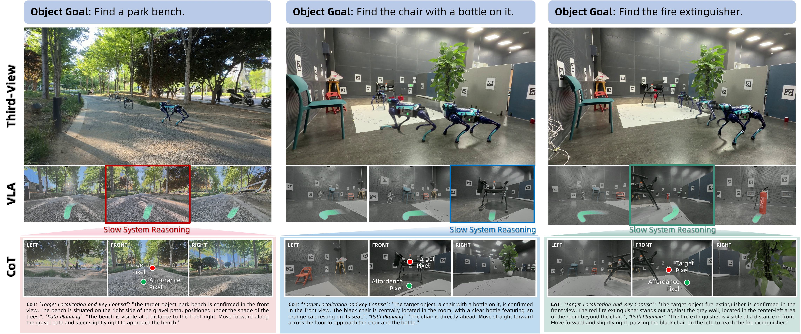
Object-Goal Navigation
Three cases——outdoor bench under dappled tree shade at long range, indoor chair with a water bottle (spatial reasoning), and partially occluded fire extinguisher——with CoT, affordance, and target pixel overlays.
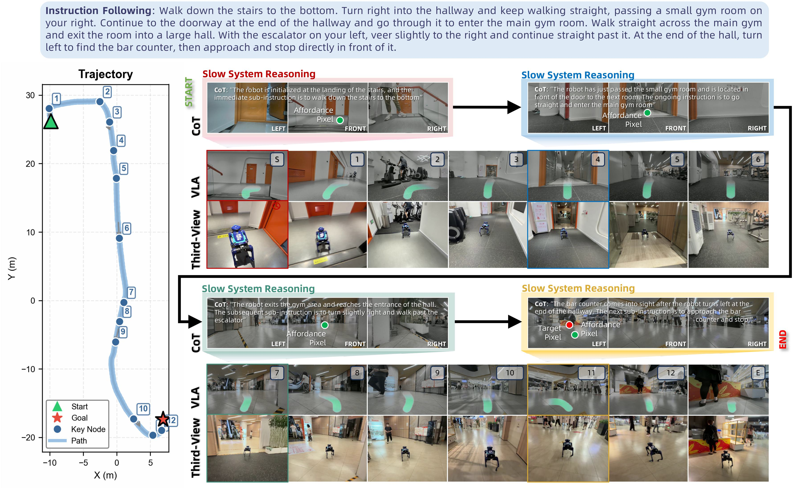
Instruction-Following
Slow-system reasoning at four critical moments——stair descent, gym entry, gym exit, and bar approach——with CoT, affordance pixel, and target pixel visualizations.
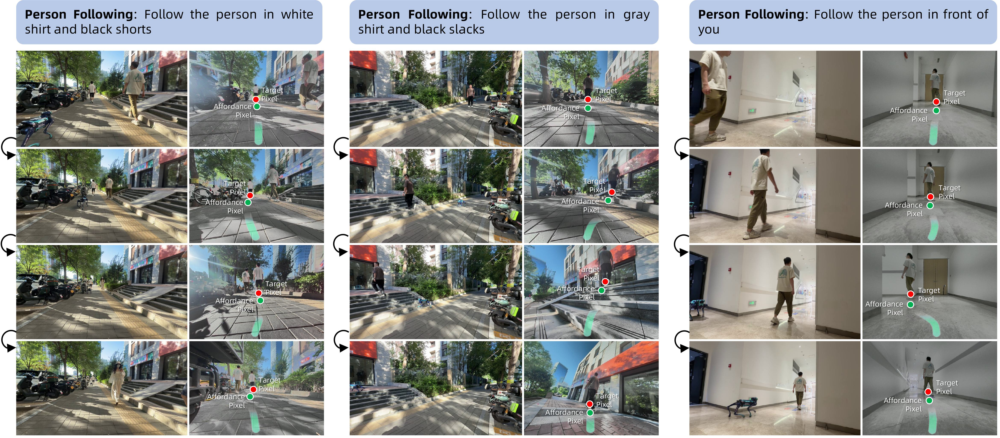
Person-Following
Outdoor tracking under pedestrian distraction, stair-climbing following, and indoor corner-rounding with temporary occlusion.
BibTeX
@misc{2026abotn1generalvisuallanguage,
title={ABot-N1: Toward a General Visual Language Navigation Foundation Model},
author={AMAP CV Lab},
year={2026},
eprint={2607.10383},
archivePrefix={arXiv},
url={https://arxiv.org/abs/2607.10383},}